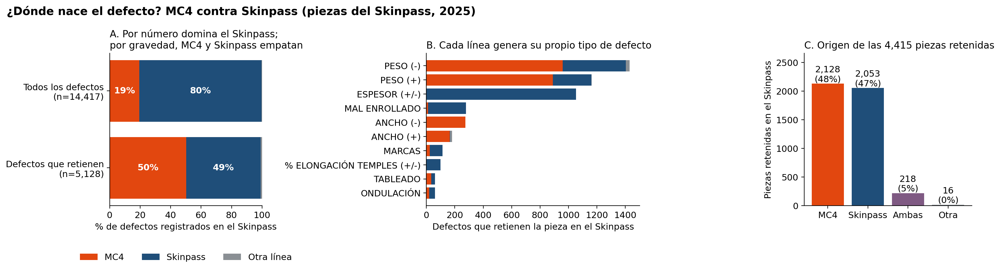

Qué encontramos al comparar directamente las dos líneas, qué dice la literatura y qué experimento le proponemos a Ternium.
Cada defecto que registra el Skinpass trae la columna Linea Origen, que dice qué línea lo provocó: MC4 (el molino caliente lo heredó y el Skinpass solo lo detecta) o Skinpass (lo generó el propio Skinpass). Además ligamos el 97.1% de las piezas del Skinpass con su rollo del MC4 (Material Entrada = Material Salida).

figuras/fig4_origen_defectos.png. Unidad: pieza del Skinpass. En panel C cada pieza retenida se asigna al origen de los defectos que la retuvieron.No compara retenciones del MC4 contra retenciones del Skinpass. Las 4,415 piezas (82,510 t) se retuvieron en el Skinpass, y lo que se reparte casi a la mitad es la línea que originó el defecto. Dentro de lo heredado del MC4, casi todo es peso.
Barras a escala sobre 82,510 t. Las ramas suman algo más del 100% porque 218 piezas tienen defectos de los dos orígenes.
Coincide con lo que registra la planta: 2,044 piezas retenidas tienen Resolución = POR PROGRAMACION. Falta verificar que sean las mismas piezas.
Los papers estudian una línea a la vez. Nuestra contribución es el cruce: ligar cada pieza del Skinpass con su rollo del MC4 y medir cuánto de lo que se retiene después viene de antes.
| Fuente | Qué dice | Cómo nos complementa |
|---|---|---|
| Ewen et al. (2026) Revisión de ML en molino caliente | Los errores geométricos del rollo caliente solo se corrigen en grado limitado en los procesos posteriores. El ancho se controla poco durante el laminado (ensanchamiento lateral) y se corrige con rodillos verticales en el desbaste. | Explica por qué los defectos de ancho del MC4 casi siempre retienen la pieza en el Skinpass. Advierte que el ancho a veces viene de modelos y no de medición. |
| Chai et al. (2023) Flujo transversal del metal | El ensanchamiento depende del ancho, del espesor de entrada y del porcentaje de reducción, con efecto no lineal. Conviene ajustar más en los castillos de arriba. | Da el mecanismo físico del ancho y justifica intervenir en el desbaste (canteo R1 y R2). |
| Ojeda-López et al. (2024) Simulación FEM en laminación | El laminado todavía se optimiza por prueba y error; la simulación permite probar programas antes de hacerlo en planta. | Justifica proponer un experimento planeado en lugar de ajustes por prueba y error. |
| Paredes y Reis (2025); Vuković y Thalmann (2022); Spirtes y Zhang (2016) Causalidad en procesos | La correlación en datos de proceso no prueba causa. Atribuir una causa requiere una intervención o un diseño causal explícito. | Linea Origen es la atribución que registra la planta, no una prueba causal. Por eso el siguiente paso es un experimento con intervención. |
| Han et al. (2019); Zhang et al. (2020); Höfler et al. (2021); Yang et al. (2025) Óxido y cascarilla | La temperatura, la reducción por castillo y el contenido de Si/Al controlan la cascarilla y el óxido rojo. | No explican el 50/50 porque el óxido casi no retiene piezas en el Skinpass, pero sí aplican a los defectos más frecuentes dentro del MC4. |
¿Cuánto bajaría la retención por peso en el Skinpass si, antes de asignar o dividir un rollo del MC4, se verificara que su peso real cabe en la ventana de peso de la orden del Skinpass?
¿Si en el MC4 se ajusta el canteo del desbaste (R1 y R2) según el producto para centrar el ancho, baja la retención por ancho en el Skinpass sin aumentar otros defectos? Es el único defecto heredado que es físico. Las palancas ya están en los datos: Canteo R1, Canteo R2, Ancho Entrada Real y Offset de Ancho Manual (se usa en el 4.5% de los rollos).
Si el objetivo es bajar los defectos más frecuentes dentro del MC4 y no lo que se retiene en el Skinpass: ¿más reducción en los castillos de adelante y menos en los de atrás reduce el óxido rojo? (Han et al., 2019).
Cada tonelada retenida implica reinspección, almacenaje, reasignación, entregas tarde o venta como material de menor calidad. La regla de peso apunta a unas 34,000 t al año.
La propuesta principal es una regla de planeación. La secundaria solo ajusta parámetros que el MC4 ya tiene.
El 92% de los rollos retenidos por ancho ya estaban marcados en el MC4 y aun así se procesaron. Desviarlos antes ahorra tiempo de línea y desgaste de rodillos.
Ternium preguntó si conviene diferenciar recetas del Skinpass por producto. Mostramos que la mitad de lo retenido viene antes del Skinpass: mejorar solo el Skinpass ataca como máximo la otra mitad.
Para convertirlo en dinero falta un dato que solo tiene Ternium: el costo por tonelada retenida.
Linea Origen es la atribución que registra la planta (sistema o inspector), no una prueba causal.02_calidad): dicen dónde se midió fuera de rango, no el mecanismo físico.Resolución = POR PROGRAMACION falta verificarla pieza por pieza.Corrección: una versión anterior decía que el 81% de los defectos de origen MC4 no estaban registrados en el MC4. Estaba inflado porque el MC4 nombra el defecto ANCHO (+/-) y el Skinpass ANCHO (-). Comparando por tipo de defecto, la cifra es 65%.
POR PROGRAMACION.